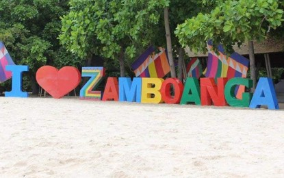

Zamboanga City has a Unique History, Fascianting Facts, and Amazing, Unique, and Beautiful Landmarks
Zamboanga's History
These Malays who built their settlements by the river banks were the subanons, that is the “People of the River”. Their chief, Saragan, lived with his family atop the legendary Mount Pulumbato that today lords over Pasonanca and Climaco Freedom Park (formerly Abong-Abong Park) then later on, the Samals and the Badjaos who came on their frail vintas also settled here, building their frail huts along the shorelines and confused “Jambangan” with “Samboangan” which comes from the word “Sabuan”, the wooden pole used to help push their vintas in shallow waters or to tie them for anchorage purposes replique montre replica orologi replika klockor The Spanish colonizers found difficulty in pronouncing “Samboangan” and instead called the place “Zamboanga”. The city has rich and colorful history. It was the center of barter trading among Chinese, Malays and the native Tausugs, Samals, Subanons, and the Badjaos as early as the 13th and 14th centuries. It was in 1569 when the Spaniards made their presence felt with a small Catholic Mission established briefly at La Caldera, now known as Recodo. Much later on June 23, 1635, the cornerstone of what is now known as Fort Pilar was laid by Father Melchor de Vera, a Jesuit Priest-Engineer and the Spanish authorities. This date marked the change of the name of the place from Samboangan to Zamboanga. It is the city’s founding date. In 1899, immediately after the Spanish-American War in the Philippines, the United States of America established full authority in Zamboanga. A special form of government was established in Mindanao and Sulu. Zamboanga was made the capital. The first form of which was the Moro province and during the 12 years of its existence, the American Military Government in the Philippines converted Zamboanga into a city in the Commission Form, the first province of Mindanao to become a city. However, the government of the Moro Province was abolished to give way to a new form of government, the Department of Mindanao and Sulu. This form of government entrusted to the Filipino residents of Zamboanga practically all positions in government. The commonwealth of the Philippines on 1936 declared Zambaonga as a Charter City. Progress and development in Zamboanga continued and in 1983, the Minister Interior Jose Roño proclaimed Zamboanga City as a highly urbanized cityBrief Information
Zamboanga City, alternatively referred to as the Cuidad de Zamboanga is the only Asian City that can speak Latin.It ranks it 5th in terms of population nationwide and third in land area size. It also holds the position of the second most populous city in Mindanao, trailing behind Davao City. Serving as the primary commercial and industrial center in the Zamboanga Peninsula Region, it holds considerable importance in the regional economy.
Tourist Spots in Zamboanga
FORT PILAR
The Real Fuerte de Nuestra Señora del Pilar de Zaragoza (Royal Fort of Our Lady of the Pillar of Saragossa), also Fort Pilar, is a 17th-century military defense fortress built by the Spanish colonial government in Zamboanga City. The fort, which is now a regional museum of the National Museum of the Philippines, is a major landmark of the city and it symbolize the cultural heritage.
SANTA CRUZ ISLAND
Santa Cruz Island is a small inhabited island in Zamboanga City in the southern region of the Philippines that is famous for its pink coralline sand.The island, located 4 kilometres (2.49 mi) south of downtown at the Santa Cruz Bank in the Basilan Strait, boasts one of the pink sand beaches in the Philippines. The color of the sand comes from the pulverized red organ pipe coral from eons of surf erosion mixed with the white sand.
ABONG ABONG
-Abong attracts tourists and residents seeking leisure activities and recreational opportunities. The area may offer amenities such as parks, viewpoints, or cultural centers that enhance the overall tourist experience.

PASONANCA PARK
The park has three public pools. It boasts an Olympic-size swimming pool, a natural flowing pool and a children's pool with water slides. There are also many picnic areas. Pictured here is the Pasonanca Kiddie Pool. Designed for children's safety. There are four water slides. The slide farthest to the right is for the beginner. The one farthest to the left is the fastest slide. The water in the pool is not stagnant. It is constantly replenished by a surge of water naturally drained into the pool by gravity. As the water fills the pool it is also immediately drained to create a natural creek that flows down the hill. The kiosks are available for rent for the whole day.
PASEO DEL MAR
One of the most stunning parks in the country in Zamboanga City is Paseo Del Mar. One may see the most breathtaking sunsets in the city as well as a breathtaking view of Basilan Island and Santa Cruz here. From Paseo del Mar, one could also observe the city's active port. The park has a number of cement seats as well as a lengthy promenade that runs along the breakwater or shoreline.

ANDA YA AQUI NA MGA BONITO LUGAR DEL CIUDAD DEL ZAMBOANGA
About Us
Welcome to the enchanting world of Zamboanga City, If you have any queries you can contact the following
De Leon, Peterson Arkin P.
Drapiza, Josh C.
8- STEM A
Zamboanga City High School - Main
Don Toribio St, Tetuan, Zamboanga City
Contact Information
dpetersonarkin@gmail.com
replovfolkevermids2326@gmail.com
O9663449557n
0917397976
References
Zamboanga City Government
WiKIPEDIA Abong Abong
WIKIPEDIA Santa Cruz Island
WIKIPEDIA Fort Pilar
Zamboanga City Government Website Zamboanga History
Zamboanga City Government Website Brief Information